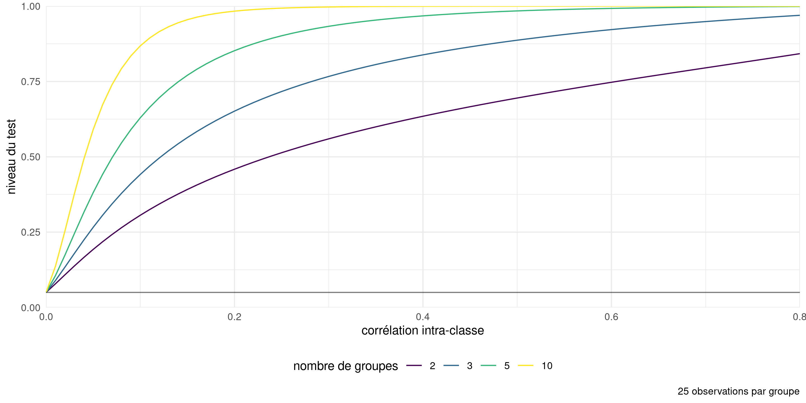
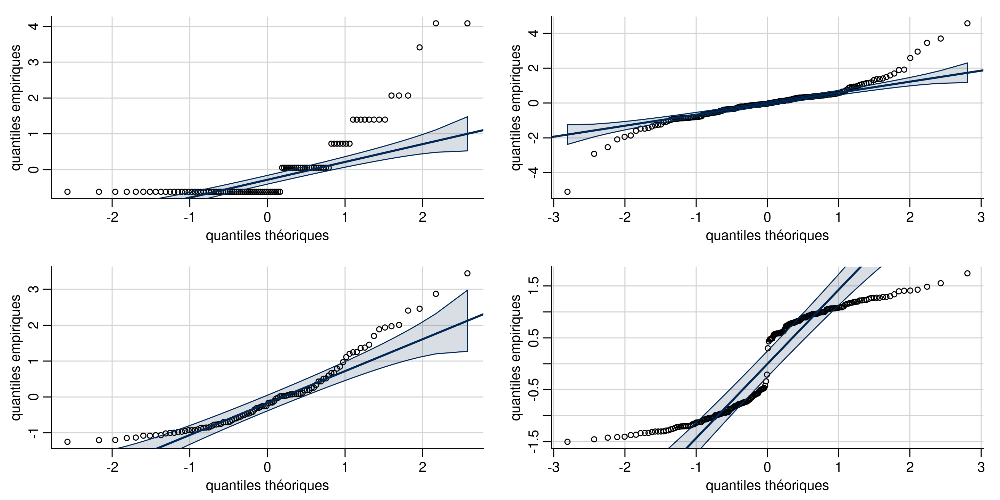

Modélisation statistique
06. Modèles linéaires
2024
Postulats du modèles linéaire
Il y a quatre postulats principaux du modèle linéaire de la forme \[Y_i \mid \mathbf{x}_i \sim \mathsf{normal}(\mathbf{x}_i\boldsymbol{\beta}, \sigma^2)\]
- linéarité et additivité: la moyenne de \(Y_i \mid \mathbf{x}_i\) est \(\beta_0 + \beta_1x_{i1} + \cdots + \beta_p x_{ip}\),
- homoscédasticité: la variance des observations \(\sigma^2\) est constante,
- indépendence des observations (conditionnellement aux covariables),
- normalité.
Lisez les petits caractères
Notre stratégie consiste à créer des outils de diagnostics graphiques ou à effectuer des tests d’hypothèse pour s’assurer qu’il n’y a pas de violation flagrante des postulats du modèle.
- Lorsque nous effectuons un test d’hypothèse, nous ne rejetons pas l’hypothèse nulle soit parce qu’elle est vraie ou par manque de preuves.
- Il en va de même pour la vérification de la validité des postulats du modèle.
- Attention à ne pas surinterpréter les diagnostics graphiques: l’humain est très doué pour trouver des tendances.
Postulat 1 - spécification adéquate de la moyenne
La moyenne est \[\mathsf{E}(Y_i \mid \mathbf{x}_i)=\beta_0 + \beta_1x_{i1} + \cdots + \beta_p x_{ip}.\]
Implicitement,
- toutes les interactions sont incluses,
- il n’y a pas de variable explicatives omise du modèle,
- la relation entre \(Y_i\) et \(X_j\) est linéaire,
- l’effet des variables explicatives est additif (moyenne + aléa).
Diagrammes diagnostics pour la linéarité
On utilise les résidus ordinaires \(\boldsymbol{e}\), qui ne sont pas corrélés avec les valeurs ajustées \(\widehat{\boldsymbol{y}}\) et les variables explicatives (c’est-à-dire les colonnes de \(\mathbf{X}\)).
- Nuage de points des résidus \(\boldsymbol{e}\) par rapport aux valeurs ajustées \(\widehat{\boldsymbol{y}}\).
- Nuage de points des résidus \(\boldsymbol{e}\) par rapport aux colonnes de la matrice du modèle, \(\mathbf{X}\).
- Nuage de points des résidus \(\boldsymbol{e}\) en fonction d’autres variables qui n’étaient pas dans le modèle.
Toute tendance locale (par exemple, tendance quadratique, cycles, points de ruptures, sous-groupes) indique une mauvaise spécification du modèle pour la moyenne.
Utiliser une courbe de lissage local (GAM ou LOESS) pour détecter les tendances.
Exemples de diagrammes de résidus
Cherchez les tendances dans l’axe des ordonnées \(y\), pas dans l’axe des abcisses \(x\) !
Figure 1: Diagrammes des résidus par rapport aux valeurs ajustées. Les deux premiers diagrammes ne montrent aucun écart par rapport à la linéarité (moyenne locale nulle). Le troisième diagramme montre une tendance quadratique évidente, ce qui suggère que le modèle moyen est mal spécifié. Notez que la distribution de la valeur ajustée n’est pas nécessairement uniforme, comme dans le deuxième panneau.
Exemples
Figure 2: Diagramme des résidus en fonction des variables explicatives (à gauche) et d’une covariable omise (à droite). On constate une interaction oubliée entre l’IMC et l’indicateur fumeur/obèse, et une tendance linéaire pour le nombre d’enfants.
Exemples de diagnostics pour les salaires
Remèdes pour une spécification erronée de la moyenne
Complexifiez le modèle:
- ajoutez d’autres variables explicatives,
- vérifiez s’il est nécessaire de spécifier des interactions,
- spécifiez les effets nonlinéaires avec des splines pénalisés,
- considérez des transformations de la variable réponse.
Postulat 2: homoscédasticité (variance constante)
On suppose que la variance est la même pour toutes les observations, \(\mathsf{Va}(Y_i \mid \mathbf{x}_i) = \sigma^2\)
Les schémas d’hétéroscédasticité usuels sont:
- la variance dépend des niveaux d’une variable catégorielle,
- la variance augmente avec la réponse (par ex., un modèle à effet multiplicatif),
- les données sont tirées d’une loi pour laquelle la variance est une fonction de la moyenne, par ex. données Poisson.
Diagnostics pour l’égalité de variance
On crée des diagnostics avec les résidus studentisés externes \(r_i\), qui ont la même variance contrairement aux résidus ordinaires \(e_i\).
Tests d’hypothèses:
- test de Levene (test-\(F\), une ANOVA à \(|r_{ij} - \overline{r_{j}}|\) en fonction de l’indice de groupe \(j\)),
- test de Breusch–Pagan (populaire en science économiques, consiste à ajuster une régression linéaire pour \(e_i^2\)),
- test de Bartlett (test de rapport de vraisemblance normale pour différentes variances, déconseillé car très sensible au postulat de normalité).
Diagnostics graphiques:
- nuage de points de \(r_i\) (en valeur absolue) en fonction des valeurs ajustées (diagramme de niveau/dispersion).
Exemples de diagrammes de niveau et dispersion
Figure 3: Diagrammes des résidus studentisés externes en fonction des valeurs ajustées (gauche) et d’une variable catégorielle (droite).
Tests pour hétéroscédasticité avec données de collège
# Résidus studentisés externes
r <- rstudent(modlin.college1)
# Test F de Levene
car::leveneTest(r ~ echelon, center = "mean", data = college)
## Levene's Test for Homogeneity of Variance (center = "mean")
## Df F value Pr(>F)
## group 2 50 <2e-16 ***
## 394
## ---
## Signif. codes: 0 '***' 0.001 '**' 0.01 '*' 0.05 '.' 0.1 ' ' 1
# Test du score avec Breusch-Pagan
car::ncvTest(modlin.college1, var.formula = ~ echelon)
## Non-constant Variance Score Test
## Variance formula: ~ echelon
## Chisquare = 70, Df = 2, p = 6e-16Conséquences de variances inégales
Figure 4: Histogramme de la loi nulle des valeurs-\(p\) obtenues par simulation à l’aide du test-\(t\) à deux échantillons (à gauche) et du test-\(t\) de Welch (à droite), sur la base de 10 000 simulations. Chaque échantillon simulé se compose de 50 observations provenant d’une distribution \(\mathsf{normale}(0, 1)\) et de 10 observations provenant d’une distribution \(\mathsf{normale}(0, 9)\). La loi uniforme sous \(\mathscr{H}_0\) aurait 5 % dans chacune des 20 cases utilisées pour l’affichage.
Remède 1 - modéliser la structure de covariance
Spécifier une fonction pour la variance, par ex.
- \(\sigma_j\) pour le niveau \(j\) d’une variable catégorielle,
- \(\sigma^2(\boldsymbol{v}_i) = g(\boldsymbol{v}_i; \boldsymbol{\psi})\) pour une transformation adéquate \(g(\cdot): \mathbb{R} \to (0, \infty)\), un vecteur de variables explicatives \(\boldsymbol{v}\) et un vecteur de paramètres \(\boldsymbol{\psi}\).
Une telle structure ouvre la voie à des comparaisons par le biais de tests de rapport de vraisemblance.
Exemple d’hétéroscédasticité
Pour les données de collège, on spécifie \(Y_i \sim \mathsf{normal}(\mathbf{x}_i\boldsymbol{\beta}, \sigma^2_{\texttt{echelon}_i})\) avec un paramètre de variance spécifique à l’échelon. Cela semble corriger l’hétéroscédasticité.
Le modèle est ajusté par maximum de vraisemblance restreint avec la fonction gls du paquet nlme.
Exemple d’hétéroscédasticité de groupe avec ANOVA
Le fonctions t.test et oneway.test effectuent des tests d’hypothèse pour des comparaisons de moyennes: pour l’observation \(i\) du groupe \(j\), on spécifie que
\[Y_{ij} \sim \mathsf{normale}(\mu_j, \sigma^2_j).\] Ces tests sont parfois listés sont le nom de Welch (1947).
Il n’existe pas de loi nulle exacte dans le cas des comparaisons de moyennes, mais des approximations dues à Satterthwaite (1946) sont employées comme références.
On doit avoir suffisamment d’observations dans chaque sous-groupe pour estimer de manière fiable la moyenne et la variance.
Remède 2 - utiliser une matrice sandwich pour les erreurs
Les économistes utilisent fréquemment des estimateurs sandwich (White 1980), en remplaçant l’estimateur usuel de la matrice de covariance des \(\widehat{\boldsymbol{\beta}}\), d’ordinaire \(S^2(\mathbf{X}^\top\mathbf{X})^{-1}\), par un estimateur sandwich de la forme
\[\widehat{\mathsf{Va}}_{\mathsf{HCE}}(\boldsymbol{\widehat{\beta}}) = (\mathbf{X}^\top\mathbf{X})^{-1}\mathbf{X}^\top\boldsymbol{\Omega}\mathbf{X}(\mathbf{X}^\top\mathbf{X})^{-1}\] avec \(\boldsymbol{\Omega}\) une matrice diagonale.
Les choix populaires pour des matrices convergente en cas d’hétéroscédasticité matrices (MacKinnon et White 1985), utilisent \(\mathrm{diag}(\boldsymbol{\Omega})_i = e_i^2/(1-h_{ii})^2\), dans le cas de la matrice HC\({}_3\).
Exemple de matrice de variance sandwich
Remplacer \(\mathsf{Va}(\widehat{\boldsymbol{\beta}})\) par \(\widehat{\mathsf{Va}}_{\mathsf{HCE}}(\boldsymbol{\widehat{\beta}})\) dans le formule des tests de Wald.
# Matrice de covariance sandwich
vcov_HCE <- car::hccm(modlin.college1)
# Statistiques de Wald
w <- coef(modlin.college1) / sqrt(diag(vcov_HCE))
# Rapport des variances avec/sans correction
diag(vcov_HCE) / diag(vcov(modlin.college1))
## (Intercept) echelonaggrege echelontitulaire domainetheorique
## 0.40 0.29 0.62 0.99
## sexehomme annees service
## 0.41 1.76 2.19
# Calcul des valeurs-p
valp <- 2*pt(abs(w),
df = modlin.college1$df.residual,
lower.tail = FALSE)Structure multiplicative
Des données multiplicatives \[\begin{align*} \left(\begin{matrix} \text{moyenne $\mu_i$}\end{matrix}\right) \times \left(\begin{matrix} \text{aléa spécifique} \end{matrix}\right) \end{align*}\] ont une plus grande variabilité quand la variable réponse est grande.
Remède 3 - transformations
Une transformation logarithmique de la variable réponse, \(\ln Y\), donne un modèle additif pour autant que \(Y > 0\).
Écrivons le modèle log-linéaire \[\begin{align*} \ln Y = \beta_0+ \beta_0 +\beta_1 X_1 +\cdots + \beta_pX_p + \varepsilon; \end{align*}\] à l’échelle originale de la variable réponse, cela représente \[\begin{align*} Y &= \exp\left(\beta_0 +\beta_1 X_1 +\cdots + \beta_pX_p\right)\cdot \exp(\varepsilon), \end{align*}\] et donc \[\begin{align*} \mathsf{E}(Y \mid \mathbf{X}) = \exp(\beta_0 +\beta_1 X_1 +\cdots + \beta_pX_p) \times \mathsf{E}\{\exp(\varepsilon) \mid \mathbf{X}\}. \end{align*}\]
Modèle lognormal
Si \(\varepsilon \mid \mathbf{x} \sim \mathsf{normal}(\mu,\sigma^2)\), alors \(\mathsf{E}\{\exp(\varepsilon) \mid \mathbf{x}\}= \exp(\mu+\sigma^2/2)\) et \(\exp(\varepsilon)\) suit une loi lognormale.
Une augmentation d’une unité de \(X_j\) mène à une augmentation moyenne de \(\beta_j\) de \(\ln Y\) sans interaction ni terme nonlinéaire pour \(X_j\), et cela se traduit par un facteur multiplicatif de \(\exp(\beta_j)\) à l’échelle de \(Y\).
- Si \(\beta_j=0\), \(\exp(\beta_j)=1\) et il n’y a pas de changement
- Si \(\beta_j < 0\), \(\exp(\beta_j)<1\) et la moyenne décroît avec \(X_j\)
- Si \(\beta_j > 0\), \(\exp(\beta_j)>1\) et la moyenne augmente avec \(X_j\)
Interprétation de modèles log-linéaires
Comparez le rapport de \(\mathsf{E}(Y \mid X_1=x+1)\) à \(\mathsf{E}(Y \mid X_1=x)\), \[\begin{align*} \frac{\mathsf{E}(Y \mid X_1=x+1, X_2, \ldots, X_p)}{\mathsf{E}(Y \mid X_1=x, X_2, \ldots, X_p)} = \frac{\exp\{\beta_1(x+1)\}}{\exp(\beta_1 x)} = \exp(\beta_1). \end{align*}\] Ainsi, \(\exp(\beta_1)\) donne le rapport des moyennes de \(Y\) quand \(X_1=x+1\) par rapport à \(X_1=x\), ceteris paribus (avec les restrictions habituelles).
L’interprétation (par rapport à la référence, dépend du signe de \(\beta_j\):
- Le pourcentage de diminution est \(1-\exp(\beta_j)\) si \(\beta_j <0\) and
- Le pourcentage d’augmentation est \(\exp(\beta_j)-1\) si \(\beta_j>0\).
Transformations plus générales
Considérons le cas où on prend le logarithme de \(Y\) et \(X_1\), avec \[\begin{align*} Y= X_1^{\beta_1}\exp(\beta_0 + \beta_2X_2 + \cdots + \beta_pX_p + \varepsilon) \end{align*}\] En prenant la dérivée par rapport à \(X_1>0\), on obtient \[\begin{align*} \frac{\partial Y}{\partial X_1}&= \beta_1 X_1^{\beta_1-1}\exp(\beta_0 + \beta_2X_2 + \cdots + \beta_pX_p + \varepsilon)= \frac{\beta_1 Y}{X_1} \end{align*}\] et réarranger cette expression nous donne \[\begin{align*} \frac{\partial X_1}{X_1}\beta_1 = \frac{\partial Y}{Y}; \end{align*}\] une mesure d’élasticité partielle: le coefficient \(\beta_1\) est un pourcentage de changement de \(Y\) pour chaque pourcentage d’augmentation de \(X_1\), ceteris paribus.
Postulat d’indépendance
Découle du plan de collecte, nécessite du contexte pour la validation.
Parmi les cas où les données sont dépendantes, les plus fréquents sont
- plans avec données répétées.
- données longitudinales: mesures répétées sur un même sujet dans le temps (évolution temporelle, peu de mesures)
- séries chronologiques: observations mesurées à plusieurs périodes de temps
- données spatiales
Conséquences de la dépendance
Les objets proches se ressemblent davantage, de sorte que la quantité de nouvelle information est inférieure à la taille de l’échantillon.
Lorsque les observations sont positivement corrélées, les erreurs-type estimées indiquées par le logiciel sont trop petites.
Cela signifie que nous sommes trop confiants et que nous rejetterons l’hypothèse nulle plus souvent que nous ne le devrions si l’hypothèse nulle était vraie (erreur de type I gonflée, plus de faux positifs).
Conséquences sur l’inférence de la corrélation
Figure 5: Taux de rejet de l’hypothèse nulle pour le test \(F\) d’égalité des moyennes pour une ANOVA à une voie avec des données générées avec une moyenne et une variance constantes, à partir d’un modèle d’équicorrélation (les observations à l’intérieur d’un groupe sont corrélées, les observations entre les groupes sont indépendantes). Le niveau nominal du test est de 5%.
Remèdes pour la dépendance
Le chapitre 6 traitera de données corrélées
L’idée principale est de modéliser la corrélation et la variance, en partant du vecteur complet d’observations et en supposant que \[\boldsymbol{Y} \mid \mathbf{X} \sim \mathsf{normal}_n(\mathbf{X}\boldsymbol{\beta}, \boldsymbol{\Sigma})\] avec un modèle pour la matrice de variance de dimension \(n \times n\), disons \(\boldsymbol{\Sigma}\), qui sera paramétré en fonction de \(\boldsymbol{\psi}\).
Séries chronologiques et données longitudinales
Pour les séries chronologiques, on peut considérer un corrélogramme, un diagramme à bande de la corrélation entre deux mesures d’une même variables à distance \(h\), en fonction de \(h\).
Avec \(n\) observations \(y_1, \ldots, y_n\), l’autocorrélation à décalage \(h=0, 1, \ldots\) est (Brockwell et Davis 2016, Définition 1.4.4) \[\begin{align*} r(h) = \frac{\gamma(h)}{\gamma(0)}, \qquad \gamma(h) = \frac{1}{n}\sum_{i=1}^{n-|h|} (y_i-\overline{y})(y_{i+h} - \overline{y}) \end{align*}\]
Exemples de corrélogrammes
Figure 6: Corrélogramme d’observations indépendantes (à gauche) et des résidus ordinaires du modèle log-linéaire ajusté aux données sur le traffic aérien (à droite). Alors que le modèle moyen de ce dernier est apparemment correctement spécifié, il existe une dépendance résiduelle entre les observations mensuelles et annuelles (décalage de \(h=12\) mois). Les lignes traitillées en bleu indiquent un intervalle de confiance ponctuels approximatifs à 95 % pour un bruit blanc (observations non corrélées).
Postulat de normalité
Sans nul doute le postulat le moins important.
L’estimateur des moindres carrés ordinaires est le meilleur estimateur linéaire sans biais (BLUE) si les données sont indépendantes et de variance constante, peu importe leur loi sous-jacente.
L’estimateur est sans biais et convergent même si la variance est mal spécifié, mais il n’est alors plus optimal.
Les tests pour les coefficients sont valides pourvu qu’ils soient estimés avec un nombre suffisant d’observations.
- attention aux interactions entre variables catégorielles (moyennes de petits sous-groupes).
Diagramme quantile-quantile
Créer un diagramme quantile-quantile Student pour les résidus studentisés externes, sachant que \(R_i \sim \mathsf{Student}(n-p-2)\) si \(E_i \sim \mathsf{normale}(0, \sigma^2)\).
Figure 7: Histogramme et densité par lissage de noyau (gauche) et diagramme quantile-quantile Student avec intervalles de confiances ponctuels à 95% obtenus par autoamorçage paramétrique (droite).
Interprétation de diagrammes quantiles-quantiles
Figure 8: Diagrammes quantiles-quantiles de données discrète (coin supérieur gauche), à ailes lourdes (coin supérieur droit), asymmétrique à droite (coin inférieur gauche) et bimodales (coin inférieur droit).
Remèdes pour la normalité
- Si les données proviennent de différentes familles (décomptes Poisson, données binaires ou proportions binomiales, etc.), utilisez des modèles linéaires généralisés..
- transformations de type Box–Cox
Transformation Box–Cox
Avec des données strictement positives, on peut utiliser une transformation de Box–Cox, \[\begin{align*} y(\lambda)= \begin{cases} (y^{\lambda}-1)/\lambda, & \lambda \neq 0\\ \ln(y), & \lambda=0. \end{cases} \end{align*}\] Les cas de figure
- \(\lambda=-1\) (inverse),
- \(\lambda=1\) (identité) et
- \(\lambda=0\) (logarithme)
sont les plus importants car les modèles résultants sont interprétables.
Inférence pour modèles Box–Cox
Si on suppose que \(\boldsymbol{Y}(\lambda) \sim \mathsf{normal}(\mathbf{X}\boldsymbol{\beta}, \sigma^2 \mathbf{I}_n)\), alors la vraisemblance est \[\begin{align*} L(\lambda, \boldsymbol{\beta}, \sigma; \boldsymbol{y}, \mathbf{X}) &= (2\pi\sigma^2)^{-n/2} J(\lambda, \boldsymbol{y}) \times\\& \quad \exp \left[ - \frac{1}{2\sigma^2}\{\boldsymbol{y}(\lambda) - \mathbf{X}\boldsymbol{\beta}\}^\top\{\boldsymbol{y}(\lambda) - \mathbf{X}\boldsymbol{\beta}\}\right], \end{align*}\] où \(J\) dénote le Jacobien de la transformation Box–Cox, \(J(\lambda, \boldsymbol{y})=\prod_{i=1}^n y_i^{\lambda-1}\).
Profilage de \(\lambda\)
Pour chaque valeur de \(\lambda\), on obtient les estimateurs du maximum de vraisemblance usuels en remplaçant \(\boldsymbol{y}\) par \(\boldsymbol{y}(\lambda)\).
La log vraisemblance profilée pour \(\lambda\) est \[\begin{align*} \ell_{\mathsf{p}}(\lambda) = -\frac{n}{2}\ln(2\pi \widehat{\sigma}^2_\lambda) - \frac{n}{2} + (\lambda - 1)\sum_{i=1}^n \ln(y_i) \end{align*}\]
Modèles pour données de poisons
Box et Cox (1964) modélise le temps de survie de 48 animaux sur la base d’un essai aléatoire. Les données sur les poisons sont équilibrées, 3 poisons ayant été administrés avec 4 traitements à 4 animaux chacun.
Nous pourrions envisager une ANOVA à deux facteurs sans interaction, étant donné le peu d’observations pour chaque combinaison. Le modèle s’écrit alors \[\begin{align*} Y &= \beta_0 + \beta_1 \texttt{poison}_2 + \beta_2\texttt{poison}_3 +\beta_3\texttt{treatment}_2 \\ &\qquad+ \beta_4\texttt{treatment}_3 +\beta_5\texttt{treatment}_4 + \varepsilon \end{align*}\]
Diagnostics graphiques pour les données de poisons
Figure 9: Diagnostics graphiques pour les données de poisons: résidus ordinaires (avec décalage) pour le modèle linéaire du temps de survie en fonction du type de poison et de traitements, et diagramme quantile-quantile des résidus studentisés.
Vraisemblance profilée
L’intervalle de confiance à 95% basé sur la log-vraisemblance profilée pour le paramètre du modèle Box–Cox contient \(\lambda=-1\).
Modèle avec transformation
La réciproque de la variable réponse \(Y^{-1}\) indique la vitesse d’action du poison, selon le type et le traitement.
Les diagnostics graphiques de ce modèles ne montrent aucune structure résiduelle.
Commentaire sur les transformations
Nous ne pouvons pas comparer les modèles ajustés à \(Y_i\) par rapport à \(\ln Y_i\) en utilisant, par exemple, des critères d’information ou des tests, parce que les modèles ont des réponses différentes.
Nous pouvons toutefois utiliser la vraisemblance de Box–Cox, qui inclut le Jacobien de la transformation, pour évaluer la qualité de l’ajustement et comparer le modèle avec \(\lambda=0\) par rapport à \(\lambda=-1\).
Diagnostics pour aberrances
Les valeurs aberrantes peuvent avoir un impact important sur l’ajustement, davantage si leur levier est élevé.
On trace la distance de Cook \(C_i\) en fonction du levier \(h_{ii}\), où \[\begin{align*} C_i=\frac{r_i^2h_{ii}}{(p+1)(1-h_{ii})}. \end{align*}\]
On peut aussi tester si les valeurs maximales pour les résidus Student sont plus grandes qu’attendues avec car::outlierTest.
Diagnostics graphiques pour les données de primes d’assurance
Figure 10: Diagnostics graphiques pour valeurs aberrantes et influentes.
Remède pour les valeurs aberrantes
- Ignorez-les (pas recommandé si elles ont un impact sérieux)
- Enlevez-les (pas recommandé, cela réduit l’erreur-type)
- Utilisez une régression robuste, qui pondère à la baisse automatiquement les aberrances.
La régression robuste est moins efficace (erreurs standard plus élevées), mais plus résistante aux valeurs aberrantes.
La théorie des statistiques robustes dépasse le cadre de ce cours.
Références